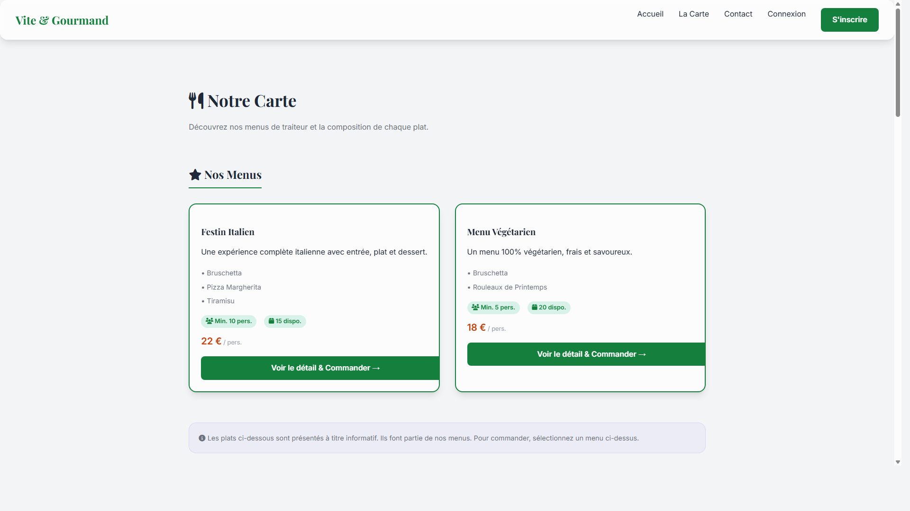

Manuel d'Utilisation & Guide d'Installation
Application de Click & Collect pour Restaurant
Date: 19/02/2026
Vite! Gourmand est une application web moderne permettant aux clients de commander leurs repas en ligne (Click & Collect) et aux restaurateurs de gérer leurs menus, commandes et réservations.
L'application offre une interface fluide, responsive et esthétique, avec des fonctionnalités complètes pour les utilisateurs et'administration.
1. Cloner le projet
git clone [url_du_repository]
cd Vite-Gourmand-TP2. Installer les dépendances
composer install
npm install3. Configuration de la Base de Données (SQLite)
Le projet est pré-configuré pour utiliser SQLite. Assurez-vous que le fichier var/data.db existe ou
sera créé.
php bin/console doctrine:database:create
php bin/console doctrine:migrations:migrate4. Chargement des Données de Test (Fixtures)
Pour avoir un site fonctionnel avec des menus et utilisateurs de test :
php bin/console doctrine:fixtures:load5. Compilation des Assets
php bin/console asset-map:compile6. Lancement du Serveur
php -S 127.0.0.1:8000 -t publicAccédez ensuite à http://127.0.0.1:8000.
La page d'accueil présente les offres du moment et les menus phares. Elle est conçue pour donner envie avec des visuels attractifs.

Les clients peuvent consulter l'ensemble des menus, plats, entrées et desserts. Les allergènes et régimes alimentaires (Végétarien, Sans Gluten, etc.) sont clairement indiqués.
Chaque menu est illustré par une photo représentative de son plat principal ou de son thème.


Vous pouvez retrouver l'historique de vos commandes dans votre espace personnel "Mes Commandes".
admin@vite-gourmand.compassword
L'interface d'administration permet de gérer :
Lors de la création ou modification d'un produit/menu, vous pouvez spécifier le nom du fichier image (ex:
pizza_margherita.jpg). Les images doivent être placées dans le dossier
public/images/products/ ou public/images/menus/.